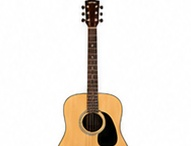
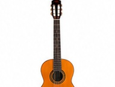
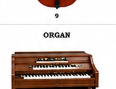
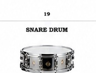
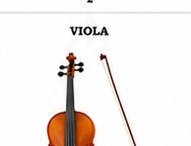

Our Products & Instruments
Explore our comprehensive range of high-quality musical instruments and accessories
Musical Instruments

🎸 Acoustic Guiters
Price: R1,800 - R12,500
What is it:
Our acoustic guiters are made very well with good materials. They are good for begining players and profesional musicians too. Every guiter is checked to make sure it sounds good and lasts a long time.
Different Types:
- Beginer Model: R1,800 - Good for starting to learn
- Middle Model (Natural): R4,500 - Nice sound for playing
- Expert Model (Orange): R8,200 - Very good sound
- Best Classical (Brown): R12,500 - For concerts
What it has:
- Good wood tops (spruce or cedar)
- Strong backs and sides
- Can fix the neck
- Good tuning knobs
- Come with case and extras
Good for: Folk, pop, clasical, and singer styles

🎸 Electric Guiters
Price: R3,200 - R15,800
What is it:
Good electric guiters for rock, metal, blues and other music. They are perfect for playing loud musik. All come with amplifier and cables too.
Models we have:
- Stratocaster (Black): R5,400 - Classic style
- Stratocaster (Natural Wood): R6,800 - Nice wood look
- Profesional Electric: R8,500 - Very good pickups
- Artist Series: R15,800 - For expert players
What it has:
- Good quality wood body
- Strong pickups for sound
- Whammy bar (to change sound)
- Good amplifer (50W)
- Effect pedal is included
Good for: Rock, metal, blues, and jazz

🎹 Keyboards & Pianos
Price: R3,500 - R85,000
What is it:
We have digital keyboreds and piano for playing musik. They have many diferent sounds and effects. You can use them for practice or playing infront of people.
What we sell:
- Electronic Keyboard (88 keys): R5,600 - Good for beginers
- Digital Piano (can move): R8,900 - Sound like real piano
- Big Acoustic Piano: R45,000 - Very good piano (new)
- Home Piano: R28,500 - Good for home
- Stage Piano: R18,200 - For playing live
What it has:
- 88 keys that feel like piano
- Many diferent sounds (more than 1000)
- Drum sound inside
- Can record musik with USB
- Pedals for playing
- Many sound layers
Good for: Clasical, jazz, and all kind of musik

🥁 Drums & Percussion
Price: R2,400 - R18,500
What is it:
We have drum sets for playing rock, pop and jazz musik. The drums are good quality and easy to use. We also have conga drums for latin musik.
What we have:
- 5 Drum Set: R5,200 - For begining
- 7 Drum Set: R9,800 - Full set for playing
- Snare Drum: R3,400 - Good drum alone
- Conga Drum (one): R4,100 - Hand drum
- Conga Drums (two): R8,200 - For latin musik
- Drum Sticks: R320 - Wood sticks for playing
What it has:
- 5 or 7 drums in set
- Good wood (birch or maple)
- Metal cymbals (crash, ride, hi-hat)
- Two pedals for bass drum
- Have drum seat and sticks
- Stands you can change
Good for: Rock, pop, jazz, and latin musik

🎻 Violins & String Instruments
Price: R3,200 - R35,000
What is it:
We have good violins, viola, cello and big string intruments. They are made from good wood from Europe. They are good for learning clasical musik and playing in orchstra.
What we have:
- Violin for learning: R3,200 - For students
- Profesional Violin: R8,500 - Very good violin
- Viola: R6,800 - Good and profesional
- Cello (beginer): R9,200 - For learning
- Cello (expert): R18,500 - For concerts
- Big Bass (student): R22,000 - For learning
- Big Bass (profesional): R35,000 - For orchstra
What it has:
- Good wood tops from Europe
- Make by hand very good
- Good tuning knobs
- Bow with horse hair
- Good case to carry
- Rosin for bow come with it
Good for: Clasical, orchstra, and all string musik

🎷 Wind & Brass Instruments
Price: R1,800 - R22,000
What is it:
We have saxaphone, flute, clarinet, trumpet, trombone and tuba. They are good for jazz and clasical musik. All instraments are easy to play.
What we have:
- Flute (beginer): R2,100 - Silver keys
- Flute (expert): R5,800 - Very good
- Clarinet (beginer): R2,400 - Good for starting
- Clarinet (expert): R6,200 - Made with good wood
- Saxaphone (alto beginer): R4,500 - Made of metal
- Saxaphone (alto expert): R9,800 - Very good keys
- Saxaphone (tenor): R11,200 - Deep sound
- Trumpet (beginer): R3,600 - Metal with valves
- Trumpet (expert): R8,900 - Very good
- Trombone (tenor): R6,800 - Have slide
- Trombone (bass): R9,200 - Deep sound
- French Horn: R7,500 - Good horn
- Tuba: R22,000 - Big instrument
- Mouthpiece: R850 - Extra piece
What it has:
- Made from metal or wood
- Good keys for playing
- Easy to fix and clean
- Have case to carry
- Cleaning kit inside
Good for: Jazz, clasical, and all band musik
Accessories & Components
🎸 Guitar Strings
Price: R180 - R420 per set
Good guitar strings for acustic and electric guiters. Many diferent kinds. Some are plastic, some are steel for diferent sound.
🎵 Guitar Picks (6 pieces)
Price: R120 - R280
Good pick for guitar playing. Come in many colors and sizes. You get 6 pieces in one pack.
🎸 Guitar Capo
Price: R280 - R680
Capo is a thing you put on guitar to change sound. It make playing easier and better sound.
🎸 Guitar Strap
Price: R350 - R920
Soft strap for holding guitar when you play. Come with good padding for comfortable. Good quality and strong.
🔌 Instrument Cable (10 feet)
Price: R280 - R580
Wire cable for conecting instruments. Make good sound come out. Have diferent sizes you can choose.
🎵 Sheet Musik Stand
Price: R420 - R1,200
Stand to put musik paper on when you playing. Can move up and down for good position. Easy to carry.
⏱️ Digital Tuner & Metronome
Price: R280 - R680
Machine that help you play right note and keep time. Very good for practising musik.
📦 Instrument Cases & Bags
Price: R450 - R3,200
Case to carry your instrament safe. Have soft bag and hard case. Good padding inside.
🎻 Violin Bow
Price: R650 - R2,800
Bow for violin playing. Make from horse hair. Come many diferent qualities.
🎻 Rosin (Violin/Cello)
Price: R150 - R420
Sticky thing for violin bow. Make bow work good with strings. Come in small cake.
🥁 Drum Sticks (Pair)
Price: R280 - R580
Wooden sticks for playing drums. Come in diferent sizes. Good quality wood.
🧹 Instrument Cleaning Kit
Price: R320 - R920
Kit to clean your instrament. Have cloth and cleaner inside. Make instrament last long time.
🔊 Guitar Amplifer
Price: R1,500 - R18,000
Box to make guitar sound loud. Small one for practice, big one for concerts. Many diferent power.
🎤 Profesional Mikrofone
Price: R980 - R5,600
Microphone for singing and recording. Good sound quality. Use with wire for conecting.
🎧 Studio Headphones
Price: R680 - R4,200
Headphones for listening to musik while recording. Very good sound. Comfortable to wear.
📚 Musik Books & Learning
Price: R220 - R580
Book with musik notes and lessons. Help you learn how to play instrament. Good for begining.
Need Help Choosing the Right Instrument?
Our expert staff can help you find the perfect instrument for your needs and budget
Contact Us for Advice